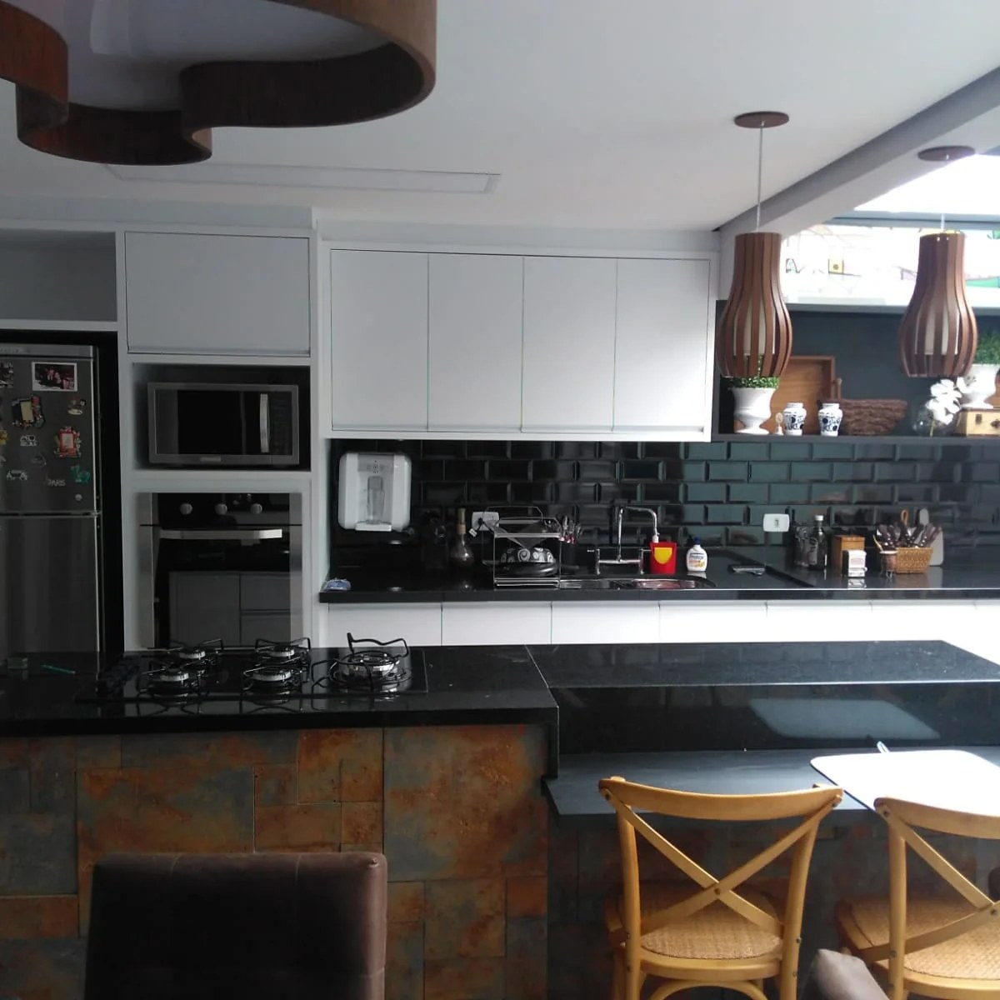
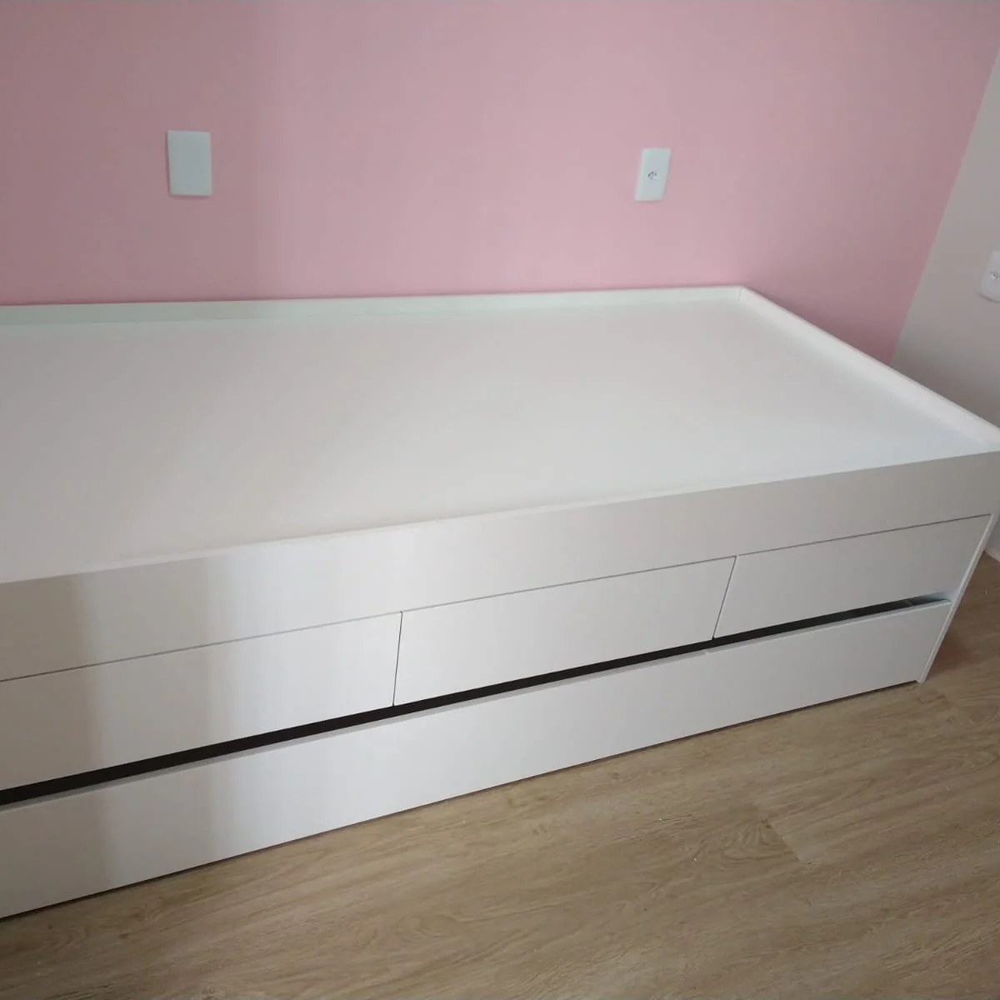

Armário até o teto, torre quente, tampo de pedra e LED. Na medida da sua parede. Garantia de 3 anos na estrutura e prazo em contrato.
Desde 1980 · Oficina Própria · Medição no Local · Projeto em 3D
Marcenaria · Rua Elisiário, 143 · Tatuapé
Aberto · Fecha às 18:00
Móveis sob medida e planejados, fotos reais das obras e orçamento pelo WhatsApp.

Cama alta, bicama e gaveteiro: sobra espaço no chão do quarto. Peça pelo WhatsApp. Marcenaria familiar desde 1980, no Tatuapé.
Garantia de 3 Anos · Prazo em Contrato · Assistência Técnica
Marcenaria · Rua Elisiário, 143 · Tatuapé
Aberto · Fecha às 18:00
Móveis sob medida e planejados, fotos reais das obras e orçamento pelo WhatsApp.